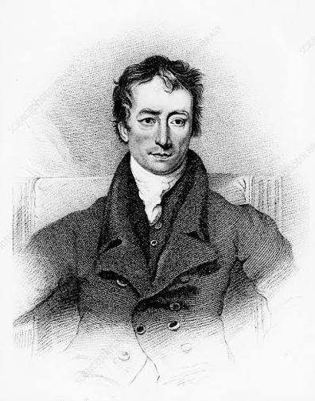
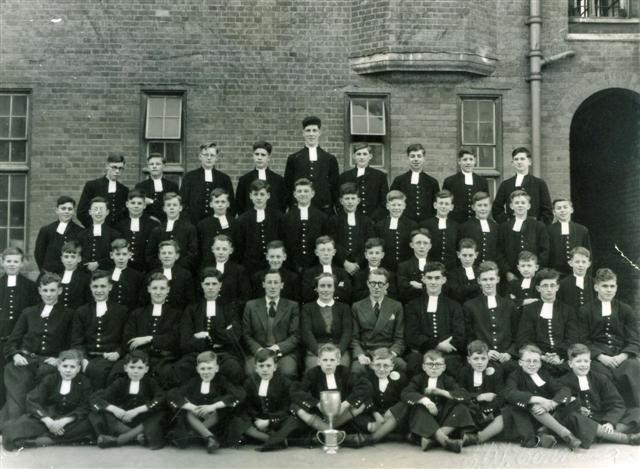
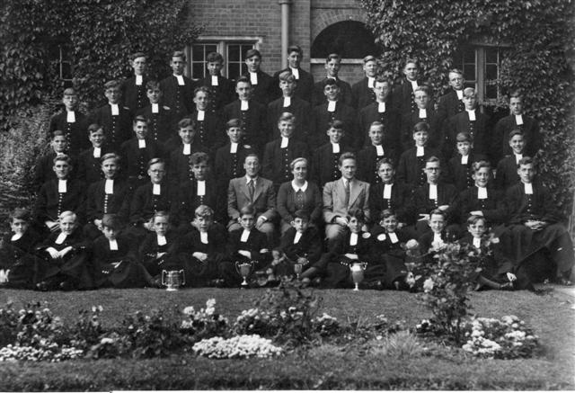
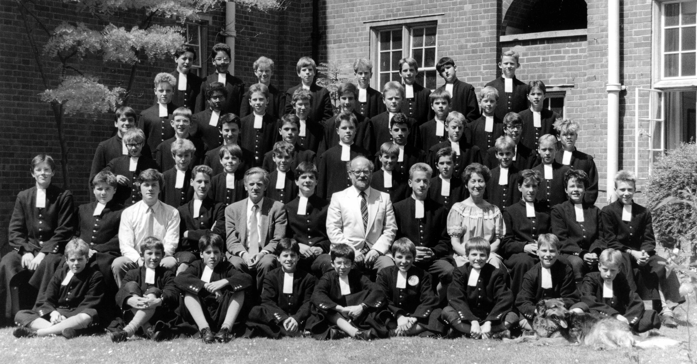
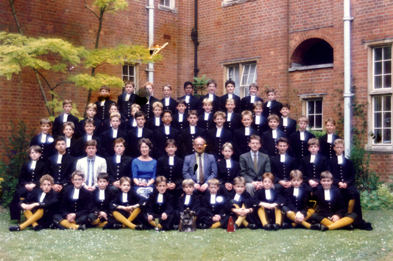

Lamb B Archive
Lamb B Archive
Lamb B Archive
Lamb B Archive
From the name of Charles Lamb to the red lion of today, this is the developing historical record of Lamb B, its pupils, Housemasters, Captains and Old Blues.
Lamb B's history stretches across more than a century, but not every chapter has survived in easily accessible records. Some years are preserved through photographs, school publications and Old Blue recollections; others remain waiting to be discovered.
This timeline therefore deliberately distinguishes between what is documented and what remains unknown. Where the evidence does not give us an answer, the archive does not invent one.
```
Charles Lamb is the historical figure at the beginning of Lamb B's story.
Charles Lamb attended Christ's Hospital from 1782. During his time at the school he formed his famous friendship with Samuel Taylor Coleridge.
Lamb later became one of the best-known English essayists and poets of the Romantic period.
He was not a Lamb B pupil. The house did not exist in its present form during his lifetime. Instead, Lamb A and Lamb B were subsequently named in his honour.
Charles Lamb is also one of the old blues one the statue on the Quad, alongside Samuel Taylor Coleridge and 2 other old blues however he is only one not holding a book. This is becaus he did not attend Grecians because he failed th Grecians speech. H did not fail due his own incompetence but because he was dyslexic which made it extremely difficult for him to read and speak. The key thing is that he didn't let this define him and he went on to become one of the most famous essayists and poets of the Romantic period.
In 1902, Christ's Hospital moved from London to its new site at Horsham, West Sussex.
This marks the beginning of the Horsham period of Lamb B's history.
Unfortunately, the surviving publicly accessible material does not currently provide a complete Lamb B pupil register from the early Horsham years.
This remains the largest gap in the Lamb B record.
We have not yet identified the first Lamb B pupil. We have also not identified the first Lamb B House Captain.
This does not mean that there was no House Captain. It means that the surviving digitised material currently available to us does not provide the answer.
The most promising sources for solving this mystery are early copies of The Blue, Housey, house photographs, school lists and other CH archival publications.
By 1925 we have definite documentary evidence that Lamb B was an established and functioning house.
Herbert Szumowski, a former Senior French Master at Christ's Hospital, is recorded as House-Master of Lamb B.
This gives future researchers a firm point from which the missing early history can be reconstructed backwards.
The public material currently available does not provide enough evidence to construct a detailed Lamb B chronology for the 1930s.
Future research should concentrate on:
By 1940 we have another direct contemporary connection.
R. L. Denyer was a Lamb B pupil and served as Honorary Secretary of the Christ's Hospital wireless society.
His affiliation was explicitly recorded as:
This is valuable contemporary evidence that Lamb B was active and producing pupils who held significant roles in school societies by the beginning of the Second World War.
The wartime period remains incompletely reconstructed.
The surviving Senior Grecian material currently available does not identify a Lamb B Senior Grecian through these particular years.
That does not mean Lamb B had no notable pupils or events during the war.
Wartime copies of The Blue, Old Blue recollections and school records may reveal:
For now, this period remains open for research.
The 1946 edition of Housey records Lamb B's badge as the red lion rampant.
Lamb A is recorded with the white lion rampant.
This establishes that the red lion is not simply a modern Lamb B design.
R. A. Leach is recorded as Senior Grecian, Lamb B, 1946–47.
Being a Senior Grecian was a major senior-school distinction at Christ's Hospital.
We do not currently have sufficient evidence to identify Leach as a House Captain or to give a verified post-CH career, so the archive deliberately leaves those details open.

This photograph is one of the most important surviving pieces of the Lamb B social record.
The surviving identifications supplied for the photograph are organised by row below.
Back Row:
Dyball; Miller, W; Purdue; Wells; Hammond; Wells;
Norris; Gillespie; Hopkins.
Second Row:
Richardson; Bates; Parker; Aird; Harris; Matthews;
Hook; Barnard; Young; Romer; G-Stevens; Earl;
Wornell, P.
Third Row:
McOustra; Bamber; Green; Wilden; Almack; Pearcey;
Stewart; Burnside; Clark; Butterworth; White; Hewitt.
Fourth Row:
Pitter; Wilson; Rickards; Miners (House Captain);
Mr Archbold (Senior Housemaster);
Miss Hull (Matron);
Mr Terry (Junior Housemaster);
Nathan; Harding; Newman; Baker.
Front Row:
Waldron; Harrison; Wells; Moth; Madge; Miller, D;
Wornell, R; Skinner; Cousins; McAuley.
Trophies:
Swimming Cup; Boxing Cup (front).
Leonard Pearcey appears in the early-1950s Lamb B material and is visible in the surviving historical house photographs.
CH recollections identify Pearcey as a notable bass singer and as someone who became well known in the musical world.
He represents one of the earliest identifiable Lamb B connections with the arts.
Geoffrey Hines was a Lamb B pupil from 1951 to 1959 and became Senior Grecian in 1958–59.
Hines later recalled that T. E. Archbold was his Housemaster throughout his time at CH and described Archbold's influence on his early rugby.
T. E. Archbold was Senior Housemaster of Lamb B through the 1950s.
He appears in the 1951 and 1953 house photographs and was remembered by Lamb B pupils as an important influence on house life.
Geoffrey Hines later recalled Archbold as a devoted schoolmaster and keen sportsman who coached him during his early rugby years.
Hines was in Lamb B and had Archbold as his Housemaster from September 1951 until Archbold's death in January 1959. He later described Archbold as a particularly important influence during his formative years at Christ's Hospital.
In Hines' recollection, Archbold coached him in the Colts XV in 1954 and 1955, together with Kit Aitken. Hines also remembered Archbold teaching him the rudiments of rugby when he was a small boy first learning the game.
Hines said that the influence of Archbold remained with him later in his rugby career. He recalled feeling Archbold's influence and presence when standing to attention for the National Anthem before playing for Oxford in the 1961 Varsity Match.
Hines ultimately described Archbold as a man who inspired him during his formative years and to whom he felt he owed a great debt.

The surviving photograph is identified as Summer 1953. Ian Pitter is identified as House Captain.
Stewart, Parker, Gillespie, Young, Earl, Clarke, Wornell, Miller, Skinner, Hewitt, Pearcey, Madge, Richardson, Bates, Cousins, Wells, Moth, Taplin, Swayne, Waldron, Chapman, Brindley, Harrison, Wheatley, Hines, Cordingly, Nisbett, Pitter, Bamford, Purdue, Archbold, Miss Hull, Barker, Miller, Dyball, Gray-Stephens, Matthews, Thomas, Williams, Levy, Harris, Showan, Sharp, Duncan, Archer and Johnson.
Archbold's time as Housemaster came to an end in January 1959 when he died following a skiing accident in Switzerland.
Geoffrey Hines later recalled that, about one week before the end of the Christmas holidays, the then Headmaster, C. M. E. Seaman, telephoned him at home to say that Archbold had suffered an accident on the ski slopes in Switzerland.
According to Hines' recollection, Archbold died a few days later after pneumonia had set in.
Hines remembered Archbold's funeral service in the Christ's Hospital Chapel. He recalled Archbold lying in a particularly elaborate coffin, which he felt was inappropriate for the man he knew.
Hines also remembered reading the lesson from Ecclesiasticus, Chapter 44, beginning with the passage traditionally associated with remembering the lives of notable people and one's fathers.
Archbold's death therefore marked the end of one of the most important Housemaster periods in the surviving post-war Lamb B record.
Martin Barker had already appeared in the 1953 Lamb B photograph as Junior Housemaster.
Following Archbold's death, Barker became associated with Lamb B as his successor.
His story provides a rare glimpse into the continuity of house leadership across the post-war period.
Peter Lansley's CH house history records:
He later became a doctor and forms part of Lamb B's growing connection with science and medicine.
Ian Johnson entered Christ's Hospital in 1959 and went to Lamb B.
Later Old Blue recollections identify him as becoming a medical professor at the University of Nottingham.
Frank Hunter is recorded as Senior Grecian for 1964–65, with Lamb B identified as his house.
His place in the archive is currently based on the documented Senior Grecian record; his later career remains to be researched.
Brian Miller is recorded as Senior Grecian for 1970–71, with Lamb B as his house.
His entry extends the documented Senior Grecian chronology nearly two decades beyond R. A. Leach.

This photograph bridges a major gap in the visual record, showing Lamb B approximately twenty years after the 1951 house photograph.
A. 1, Bridges?, Steven Lloyd, Charlie Fraser, Peter Everett, Yeomans, Rodgers, Erskine, Jock Fairbairn, 10, Tim Walmsley, David Hemy?, Dave Sergeant.
B. Campbell, Nigel Hutchins, Paul Brazier, Steen Lagoni, Pickering?, Stonhill, Hubbard, Cooper, Alan Larsen, Parkinson?, Paul?, Langley?, Dave Johnson.
C. 1, 2, 3, 4, Dave O'Meara, Bob Rae, 7, 8, 9, Nigel Wood, Paul Sibley.
D. 1, 2, Chadwick, De Mattos?, Cox?, Gelpke, Ian Argyle, 8, Paul?, Chris Comley.

This photograph adds another visual record of Lamb B during the late twentieth century and helps bridge the gap between the earlier 1970s photograph and the later 1980s records.

This photograph provides another visual snapshot of Lamb B during the late twentieth century.
It is especially interesting when viewed alongside the approximately 1971 photograph and the records of pupils such as James D'Arcy, who attended CH during this era.

Another surviving house photograph from the late 1980s, helping document Lamb B's people and appearance during this period.

The 1990 photograph continues the visual record of Lamb B into the final decade of the twentieth century.

One of the best-known modern Old Blues connected with Lamb B.
James D'Arcy attended Christ's Hospital from 1984 to 1991.
The surviving CH record specifically identifies his association as Lamb B / Lamb A, so the archive does not simplify his entire CH period to Lamb B.
Matthew Adams is documented as a Lamb B pupil from 1995–98.
His later CH progression included other houses and senior positions, eventually reaching Second Monitor.
Tom Forrest is recorded as having been associated with Lamb B and Mid A from 1996–2003.
He belongs in the continuing alumni record, although his post-CH career is still to be researched in sufficient detail for a full notable-alumnus profile.
Keir Churchill is recorded as House Captain of Lamb B in 2020.
His documented CH achievements included:

Lamb B is still writing its history.
The archive will continue to grow with new photographs, House Captains, Old Blues, House achievements and memories.
The gaps in the historical record are not the end of the story — they are invitations to discover what comes next.
Lamb B / Lamb A, 1984–91. Actor known for Edwin Jarvis in Agent Carter and Avengers: Endgame, as well as Dunkirk, Broadchurch and other film and television work.
Lamb B, 1951–59. Senior Grecian, Oxford rugby player, Oxford Blue and England rugby trialist.
Lamb B, 1959–66. Later became a medical professor at the University of Nottingham.
Lamb B, 1995–98. Later RAF officer, pilot and involved with Friends of Christ's Hospital USA.
Lamb B in the early 1950s. Remembered in CH material as a notable bass singer who became well known in the musical world.
Prep A → Lamb B, 1957–66. Later became a doctor.
Lamb B's history is not yet complete. These are some of the biggest unanswered questions:
If new photographs, Housey pages, Old Blue memories, House Captain records or other historical material are found, they can be added to this archive.